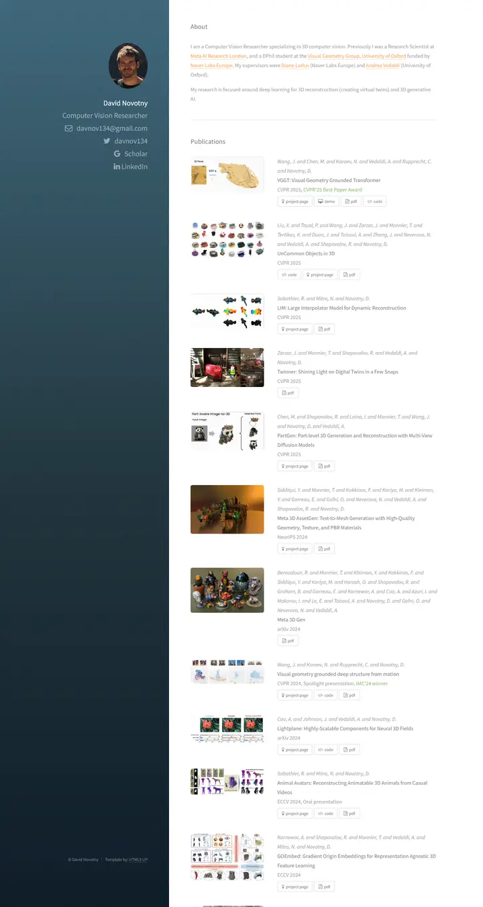
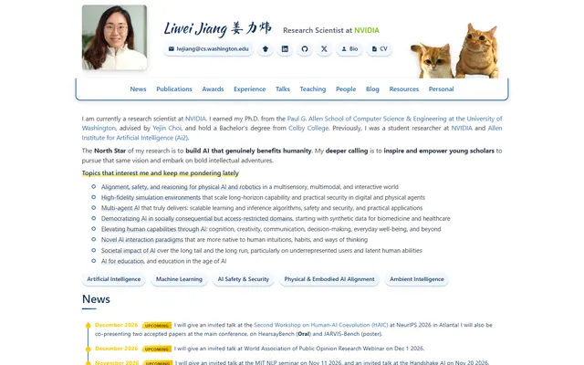

David Novotny
A harbour at dusk beside a quiet reading room: a fixed teal-to-midnight panel with right-aligned contact lines, and soft grey text with tangerine links on white.

Checked against the rendered page. Replaced v1 file; v1 said body 16pt and a flat #021a2e sidebar, but the render shows 16px (12pt rule under 1800px) and a teal-to-navy gradient photo over #021a2e.
Why it is here
Gradient teal sidebar with the identity block, and a publication list with figure thumbnails on the right. The split layout is memorable.
Overview
Color Palette
Typography
Source Sans Pro 400/400i
David Novotny, 3D computer vision
Abstract · Method · Results · BibTeX — 0123456789
FontAwesome 4
David Novotny, 3D computer vision
Abstract · Method · Results · BibTeX — 0123456789
Spacing & Shape
Page Modules
Guidelines
More like this

Amir Bar
A clean faculty prospectus in Imperial blue: Inter on white, pill links, and paper cards that lift a few pixels when you reach for them.

Christoph Feichtenhofer
A conference-hall banner in Facebook blue, then a long ledger of papers in red ink, green venues and justified grey abstracts.

Jaeyeon Kim
A quiet seminar handout in light Roboto, where one red-highlighted question and a row of mint tags are the only raised voices.

Jonathan Shafer
A keynote opening slide: one full-bleed slate-blue field, a ringed portrait, a 108px name and a centred paragraph you read from across the room.

Junyang Lin
A quiet researcher's folio on warm paper: Garamond headings, teal small labels and hairline-ruled entries.

Liwei Jiang
A tidy navy research ledger signed in brush script, with two cats peeking over the tab bar and gold stamps on every milestone.